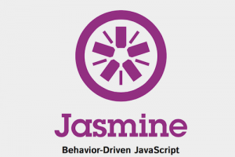
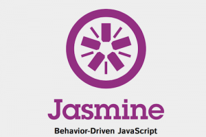

My name is Edwin Aoraha. Welcome to my personal website. I've recently made a career switch to front-end web development from chemical engineering with the help of Grand Circus Detroit. Here are some technical skills I've picked up along the way:
 
